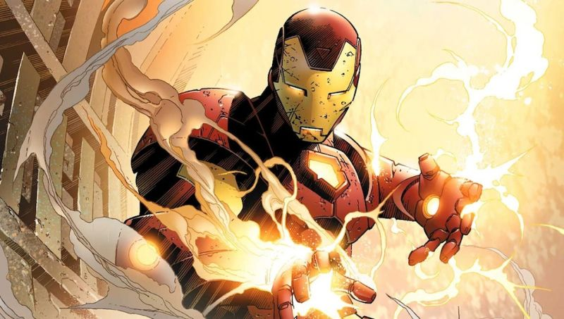
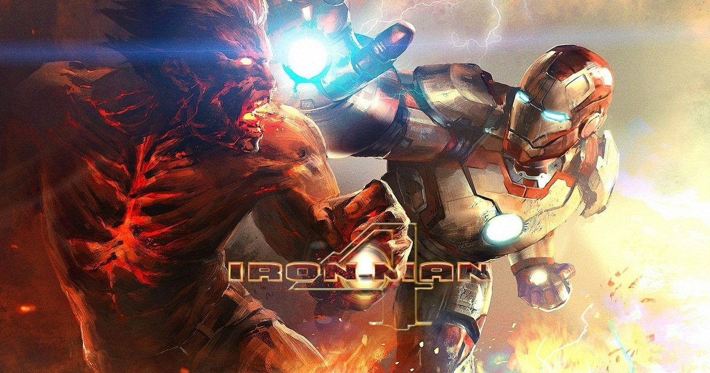
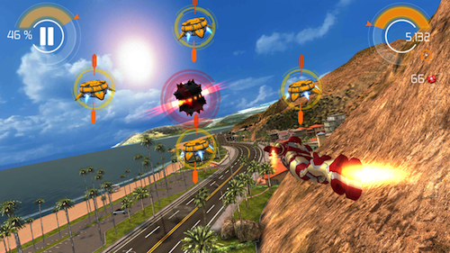
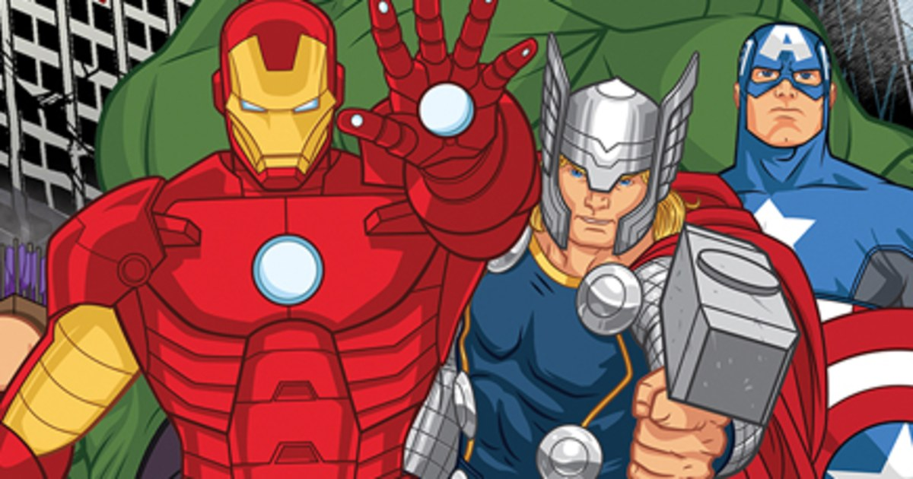

Iron Man is a fictional superhero appearing in American comic books published by Marvel Comics. The character was created by writer and editor Stan Lee, developed by scripter Larry Lieber, and designed by artists Don Heck and Jack Kirby. The character made his first appearance in Tales of Suspense #39 (cover dated March 1963).
Iron Man is a 2008 American superhero film based on the Marvel Comics character of the same name, produced by Marvel Studios and distributed by Paramount Pictures.1 It is the first film in the Marvel Cinematic Universe. The film was directed by Jon Favreau, with a screenplay by the writing teams of Mark Fergus and Hawk Ostby and Art Marcum and Matt Holloway.
Iron Man is an action-adventure video game based on the film of the same name as well as the classic iterations of the character. It was released on May 2, 2008 to coincide with the release of the film in cinemas. The game is published by Sega, and was released for multiple game consoles, Microsoft Windows and Mobile platforms.
ron Man, also known as Iron Man: The Animated Series, is an American animated television series based on Marvel Comics' superhero Iron Man. The series aired from 1994 to 1996 in syndication as part of The Marvel Action Hour, which packaged Iron Man with another animated series based on Marvel properties, the Fantastic Four, with one half-hour episode from each series airing back-to-back.
